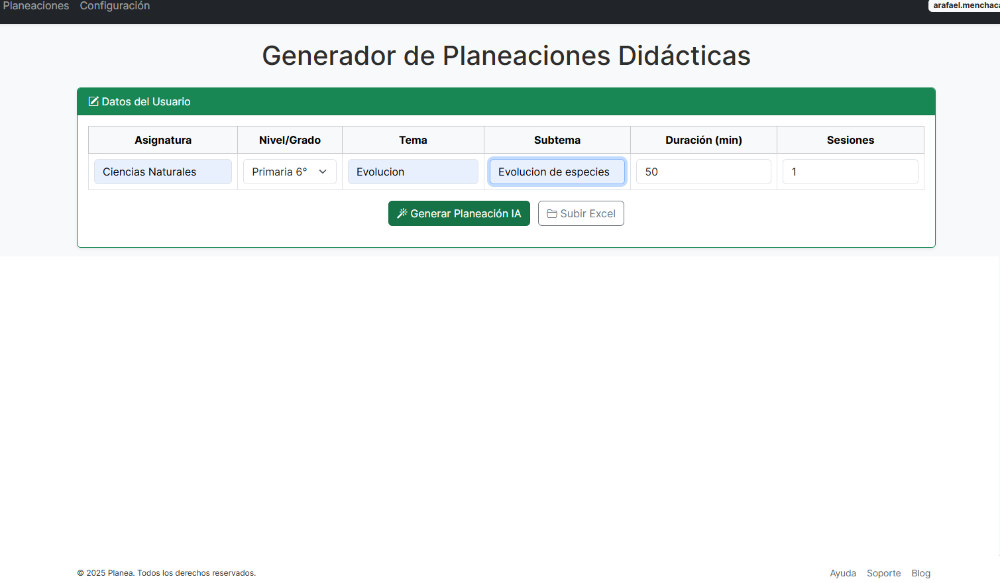
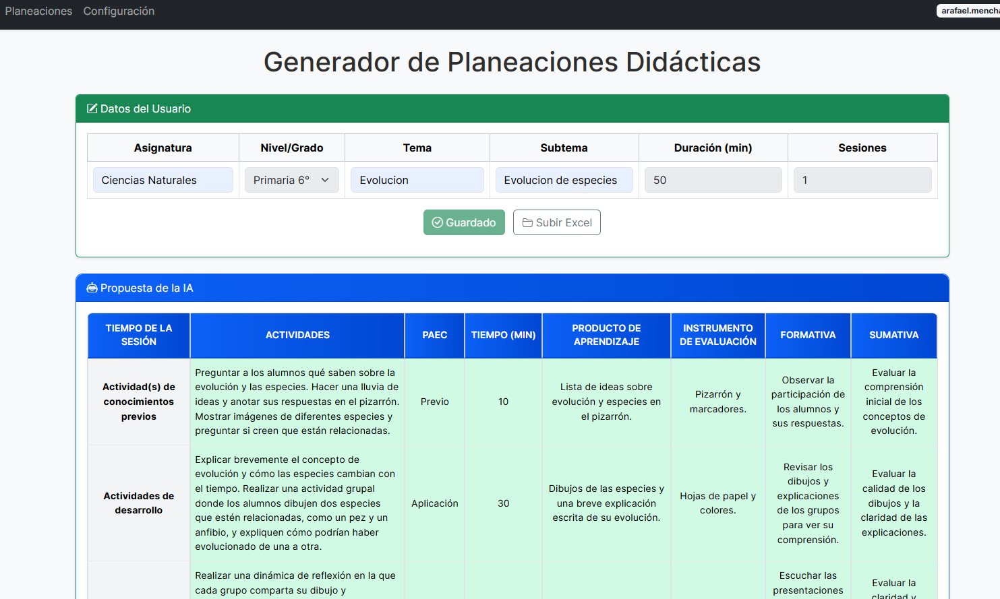
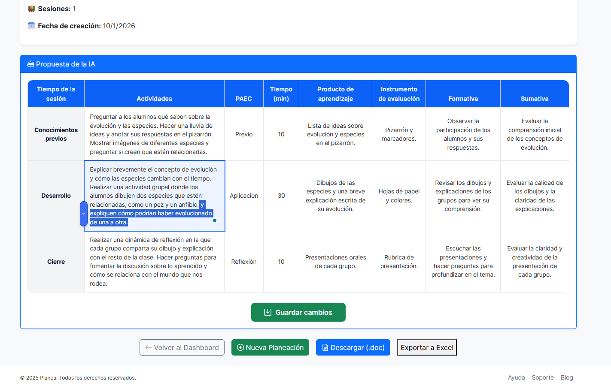
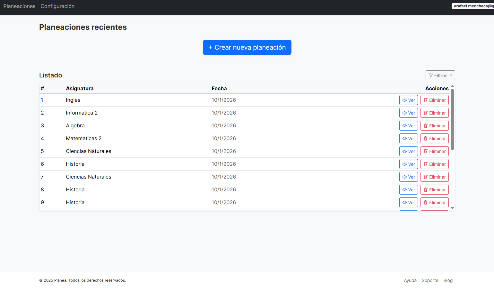

Tiempo real
Estados por tema
No empiezas escribiendo temas al vacío. Primero ubicas el contexto, luego generas por unidad, revisas estados y finalmente editas el detalle antes de descargar.
Tiempo real
Estados por tema
Resultado
Detalle editable
Ubica el contexto
El explorador mantiene la ruta actual visible para que nunca pierdas de vista dónde estás trabajando.


Prepara la generación
La vista principal de la unidad se mantiene limpia. El panel de staging aparece al hacer clic en “Agregar temas”.
Sigue el progreso
El feedback visual aparece hasta que se usa y muestra el estado actual con animación mientras la IA trabaja.


Ajusta el resultado
El detalle muestra la ruta jerárquica de origen, habilita edición con un estado claro y conserva Word/Excel al final del flujo.
Verlo en acción